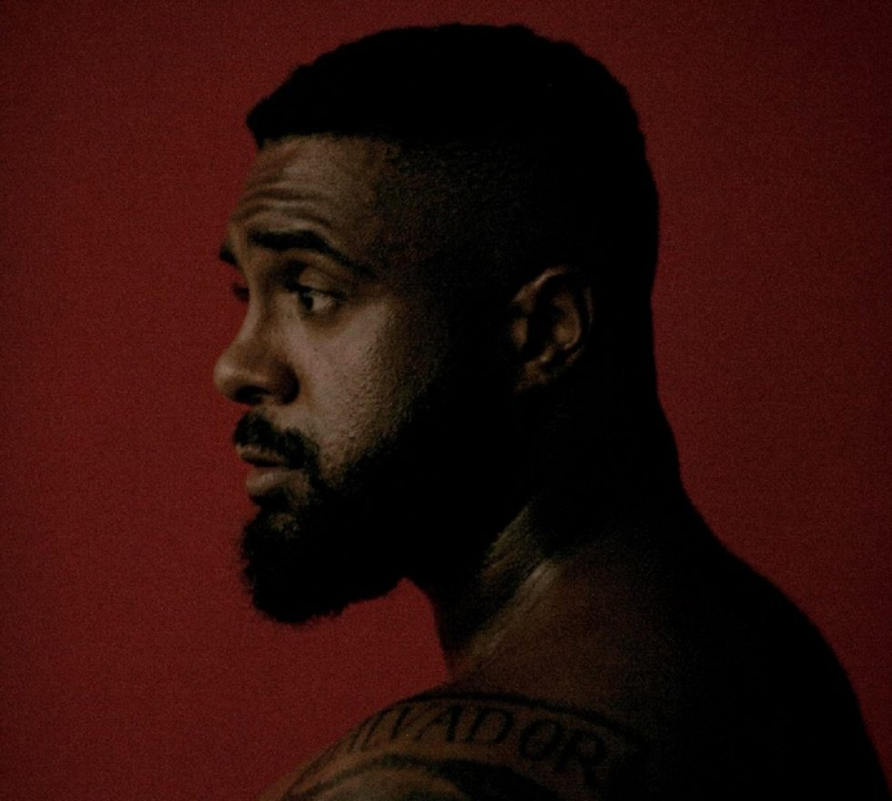

Baco Exu do Blues é um rapper, cantor e compositir brasileiro. Seu nome verdadeiro é Diogo Alvaro Ferreira Moncorvo, nascido em Salvador, Bahia em 11 de janeiro de 1996. Hoje em dia o cantor tem 28 anos de ideda e 13 anos de carrera musical com os gêneros MPB, hip hop, rap e blues.
O nome Baco Exu do Blues é a fusão de Baco(o deus romano do vinho e dos excessos), Exu(o mensageiro dos orixás) e Blues, o "primeiro ritmo a formar pretos ricos"
Baco começou a ganhar popularidade após o lançamento da faixa Sulicídio,composta em 2016 com o rapper Diomedes Chinaski, em que ambos fazem críticas aos cenário nacional do rap, concentrado na região Sudeste, principalmente nos estados de Rio de Janeiro e São Paulo, dando mais visibilidade para as regiões Nordeste e Norte. Dentre as principais características de Baco estão suas fortes metáforas com letras cruas e poéticas, que falam sobre amor, poder, religião e sociedade. Em 2017, Baco Exu do Blues foi premiado como Artista Revelação pelo Prêmio Multishow de Música Brasileira. O artista também teve a sua canção "Te Amo Disgraça" eleita a Canção do Ano.
